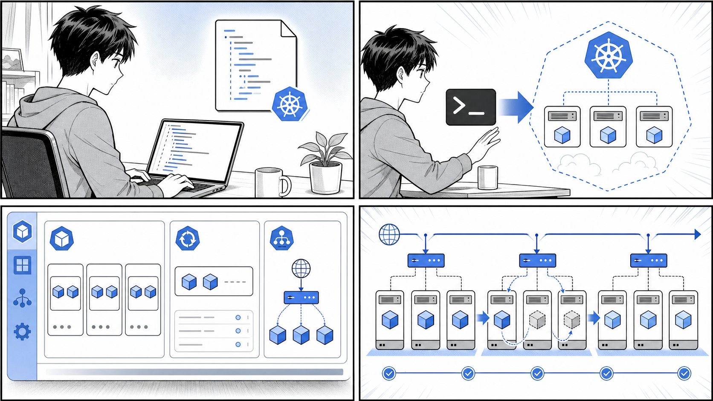

第 6 章 Kubernetes のデプロイ・クラスタ構築¶

マニフェストを適用し、Deployment と Service を観察しながら、ローリング更新で安全に変更します。
はじめに¶
前章では Kubernetes の基本的なリソース（Pod、ReplicaSet、Deployment、Service など）と、それらをマニフェストで宣言的に管理する考え方を学びました。この章では、これまでに学んだ知識を総動員して、複数のコンポーネントからなる実用的なアプリケーションを Kubernetes 上にデプロイします。
題材として使うのは、第 4 章で Docker Compose を用いて構築した「タスク管理アプリケーション（taskapp）」です。Compose ではローカルマシン上の単一ホストでコンテナ群を動かしていましたが、本章ではそれを Kubernetes クラスタ上のリソースとして再構成します。データベースの永続化、データベースマイグレーションの実行、複数の Web/API コンポーネントの連携、そしてブラウザからのアクセス公開まで、実運用に近い構成を一通り体験します。
本章で扱うマニフェストは、サンプルリポジトリ taskapp（gihyodocker/taskapp 相当）の k8s/plain/local/ ディレクトリに収録されているものを引用します。コードを読み解きながら、Compose の世界が Kubernetes の世界へどのように写し取られるのかを確認していきましょう。
この章で学ぶこと¶
- Compose の各サービスが Kubernetes のどのリソースに対応するか（6.1）
- マニフェストを
kubectl applyで順序立ててデプロイする方法（6.2） - MySQL の永続化、マイグレーション Job の完了待ち、Secret/ConfigMap の扱い（6.2）
- Ingress と ingress-nginx を使ってアプリケーションをブラウザに公開する流れ（6.3）
6.1 タスクアプリの構成¶
Compose 構成のおさらい¶
第 4 章で構築した taskapp は、以下のコンポーネントから構成されていました。
- mysql — タスクデータを保存するデータベース
- migrator — データベースのスキーマを構築するマイグレーションツール
- api — タスクの CRUD を提供するバックエンド API（前段に nginx をリバースプロキシとして配置）
- web — ユーザーが操作する Web フロントエンド（こちらも前段に nginx を配置し、api を呼び出す）
Compose ではこれらを docker-compose.yml の services として並べ、depends_on で起動順を制御していました。Kubernetes では「サービス」という言葉が別の意味（Service リソース）を持つため、混乱しないよう注意が必要です。Compose の 1 サービスは、Kubernetes では「ワークロードリソース（Deployment や StatefulSet、Job）」と、それにアクセスするための「Service リソース」の組み合わせとして表現されます。
Compose から Kubernetes リソースへの対応¶
それぞれのコンポーネントは、その性質に応じて最適な Kubernetes リソースに対応づけられます。
| Compose のサービス | 性質 | Kubernetes のリソース |
|---|---|---|
| mysql | 状態を持つ（データを永続化する） | StatefulSet ＋ Service（ヘッドレス） |
| migrator | 一度だけ実行して完了する | Job |
| api | 状態を持たない（複製可能） | Deployment ＋ Service |
| web | 状態を持たない（複製可能） | Deployment ＋ Service |
| 外部公開 | クラスタ外からのアクセス受け口 | Ingress |
ポイントは次の 3 点です。
- 状態の有無でワークロードを使い分ける — MySQL のようにデータを保持し続けるコンポーネントは StatefulSet を、api/web のようにいつでも作り直せるコンポーネントは Deployment を使います。
- 一度きりの処理は Job にする — マイグレーションは「実行して成功したら終わり」という処理なので、常駐させる Deployment ではなく、完了を前提とした Job が適切です。
- 外部公開は Ingress に集約する — クラスタ内部の通信は Service で完結しますが、ブラウザからアクセスするには HTTP のエントリポイントとなる Ingress が必要です。
構成図¶
taskapp を Kubernetes 上に展開したときの全体像を以下に示します。
![uml diagram]()
ブラウザからのリクエストは Ingress を入口として web に届き、web は内部の api Service を経由して api を呼び出し、api は mysql Service を経由して MySQL にアクセスします。migrator は最初に一度だけ MySQL のスキーマを構築する役割を担います。Secret は MySQL のパスワードや api の設定ファイルといった機密情報を各コンポーネントへ安全に渡すために使われます。
なお、本章で引用するマニフェストはすべて taskapp リポジトリの k8s/plain/local/ 配下にあります。「plain」は、Kustomize などのツールを使わずに素の YAML として書かれていることを示しています。同じ構成を Kustomize で整理した版が k8s/kustomize/base/ にあり、こちらは本章の補足として適宜参照します。
6.2 タスクアプリを Kubernetes にデプロイする¶
ここからは実際にマニフェストを読みながら、各リソースをクラスタへ適用していきます。出典は apps/taskapp/k8s/plain/local/ 配下のファイルです。
デプロイの順序¶
コンポーネントには依存関係があるため、適用する順序が重要です。Compose では depends_on が起動順を面倒見てくれましたが、Kubernetes の kubectl apply は基本的に「宣言した状態に近づける」だけで、リソース間の起動順は保証しません。そこで、依存される側から順に適用し、必要に応じて完了を待つ運用を行います。
![uml diagram]()
つまり「DB → マイグレーション Job → api → web」の順です。それぞれを見ていきましょう。
MySQL のデプロイと永続化¶
MySQL は mysql.yaml（apps/taskapp/k8s/plain/local/mysql.yaml）に定義されています。データを失わないよう、StatefulSet と PersistentVolumeClaim（PVC）を組み合わせている点が最大の特徴です。
apiVersion: apps/v1
kind: StatefulSet
metadata:
name: mysql
labels:
app: mysql
spec:
selector:
matchLabels:
app: mysql
serviceName: "mysql"
replicas: 1
template:
metadata:
labels:
app: mysql
spec:
terminationGracePeriodSeconds: 10
containers:
- name: mysql
image: ghcr.io/gihyodocker/taskapp-mysql:v0.1.0
env:
- name: MYSQL_ROOT_PASSWORD_FILE
value: /var/run/secrets/mysql/root_password
- name: MYSQL_DATABASE
value: taskapp
- name: MYSQL_USER
value: taskapp_user
- name: MYSQL_PASSWORD_FILE
value: /var/run/secrets/mysql/user_password
ports:
- containerPort: 3306
name: mysql
volumeMounts:
- name: mysql-data
mountPath: /var/lib/mysql
- name: mysql-secret
mountPath: "/var/run/secrets/mysql"
readOnly: true
volumes:
- name: mysql-secret
secret:
secretName: mysql
volumeClaimTemplates:
- metadata:
name: mysql-data
spec:
accessModes: [ "ReadWriteOnce" ]
resources:
requests:
storage: 1Gi
注目すべき点を整理します。
- StatefulSet による永続化 —
volumeClaimTemplatesでmysql-dataという PVC を定義し、/var/lib/mysql（MySQL のデータディレクトリ）にマウントしています。StatefulSet は Pod ごとに固有の PVC を払い出すため、Pod が再起動・再スケジュールされても同じボリュームが再アタッチされ、データが保持されます。これが Deployment ではなく StatefulSet を使う理由です。 - パスワードはファイル経由で渡す —
MYSQL_ROOT_PASSWORD_FILEやMYSQL_PASSWORD_FILEは、パスワードそのものではなくパスワードが書かれたファイルのパスを指しています。実体はmysqlという名前の Secret をボリュームとして/var/run/secrets/mysqlにマウントすることで供給されます。パスワードを環境変数に直書きせず Secret に分離するのは、機密情報を扱う際の基本です。 serviceName: "mysql"— StatefulSet は安定したネットワーク ID を提供するためにヘッドレス Service と連携します。これが後述する Service のclusterIP: Noneに対応します。
続いて MySQL 用の Service です（同じ mysql.yaml 内）。
apiVersion: v1
kind: Service
metadata:
name: mysql
labels:
app: mysql
spec:
ports:
- protocol: TCP
port: 3306
targetPort: 3306
selector:
app: mysql
clusterIP: None
clusterIP: None を指定したヘッドレス Service です。通常の Service は仮想 IP を 1 つ割り当ててロードバランスしますが、ヘッドレス Service は DNS が直接 Pod を解決します。StatefulSet と組み合わせる定番の構成で、他のコンポーネントは mysql というホスト名（同一 namespace 内なら mysql:3306）で MySQL に接続できます。
補足：Secret の作成について 本章のマニフェストは
secretName: mysqlの Secret が存在することを前提にしています。k8s/plain/local/にはmysql-secret.yamlを読み込むTiltfileが同梱されており、Tilt を使う場合はこの Secret が自動で適用されます。kubectlで手動デプロイする場合は、先にroot_passwordとuser_passwordをキーに持つ Secret を作成しておく必要があります。
MySQL を適用したら、Pod が起動して受け付け可能になるまで待ちます。状態の確認は次のコマンドで行います（出力は環境によって異なるため、ここでは確認の方法だけ示します）。
# MySQL の StatefulSet と Pod の状態を確認する
kubectl get statefulset mysql -n taskapp
kubectl get pod -l app=mysql -n taskapp
# Pod が Ready になるまで待つ（例）
kubectl wait --for=condition=Ready pod -l app=mysql -n taskapp --timeout=120s
# 払い出された PVC を確認する
kubectl get pvc -n taskapp
kubectl get pod の出力で対象 Pod の STATUS が Running かつ READY が 1/1 になっていれば、次のステップに進めます。
マイグレーション Job の実行と完了待ち¶
データベースが起動したら、スキーマを構築するマイグレーションを実行します。migrator.yaml（apps/taskapp/k8s/plain/local/migrator.yaml）は、これを Job として定義しています。
apiVersion: batch/v1
kind: Job
metadata:
name: migrator-up
labels:
app: migrator
spec:
template:
metadata:
labels:
app: migrator
spec:
containers:
- name: migrator
image: ghcr.io/gihyodocker/taskapp-migrator:v0.1.0
env:
- name: DB_HOST
value: mysql
- name: DB_NAME
value: taskapp
- name: DB_PORT
value: "3306"
- name: DB_USERNAME
value: taskapp_user
command:
- "bash"
- "/migrator/migrate.sh"
args:
- "$(DB_HOST)"
- "$(DB_PORT)"
- "$(DB_NAME)"
- "$(DB_USERNAME)"
- "/var/run/secrets/mysql/user_password"
- "up"
volumeMounts:
- name: mysql-secret
mountPath: "/var/run/secrets/mysql"
readOnly: true
volumes:
- name: mysql-secret
secret:
secretName: mysql
restartPolicy: Never
Job ならではのポイントは以下です。
kind: Job／restartPolicy: Never— Job は「処理を完了させること」が目的のワークロードです。restartPolicyをNeverにすることで、コンテナが終了しても再起動せず、成功したら Job 全体が完了（Complete）扱いになります。- 接続先は
DB_HOST: mysql— 先ほど作成したmysqlService の名前をそのまま接続先として指定しています。これにより、IP アドレスを意識せず DNS 名で MySQL にアクセスできます。 - Secret を再利用 — マイグレーションも MySQL に接続するため、
mysqlSecret をマウントしてユーザーパスワードのファイル（/var/run/secrets/mysql/user_password）をmigrate.shの引数として渡しています。 argsの最後がup— マイグレーションを「適用方向（up）」で実行することを指定しています。
Job を適用したら、完了するまで待ちます。
# マイグレーション Job を適用する
kubectl apply -f migrator.yaml -n taskapp
# Job が完了するまで待つ
kubectl wait --for=condition=complete job/migrator-up -n taskapp --timeout=120s
# Job と Pod の状態、ログを確認する
kubectl get job migrator-up -n taskapp
kubectl logs job/migrator-up -n taskapp
kubectl get job で COMPLETIONS が 1/1 になっていればマイグレーションは成功です。失敗している場合は kubectl logs で原因を確認します。よくある失敗は、MySQL がまだ接続を受け付ける前に Job が走ってしまうケースです。その場合は MySQL の Ready を確認してから Job を再適用してください。
補足：Kustomize 版との違い
k8s/kustomize/base/migrator/job.yamlでは、Job がマウントする Secret 名がmysqlではなくmigratorという別名になっています（secretName: migrator）。plain 版は MySQL と同じmysqlSecret を共有し、Kustomize 版はコンポーネントごとに Secret を分けるという設計の違いです。どちらでも動作しますが、責務を分離したい場合は後者の考え方が参考になります。
api のデプロイ¶
スキーマが用意できたら、バックエンド API をデプロイします。api.yaml（apps/taskapp/k8s/plain/local/api.yaml）の Deployment 部分は次のとおりです。
apiVersion: apps/v1
kind: Deployment
metadata:
name: api
labels:
app: api
spec:
replicas: 1
selector:
matchLabels:
app: api
template:
metadata:
labels:
app: api
spec:
containers:
- name: nginx-api
image: ghcr.io/gihyodocker/taskapp-nginx-api:v0.1.0
env:
- name: NGINX_PORT
value: "80"
- name: SERVER_NAME
value: "nginx-api"
- name: BACKEND_HOST
value: "localhost:8180"
- name: BACKEND_MAX_FAILS
value: "3"
- name: BACKEND_FAIL_TIMEOUT
value: "10s"
- name: api
image: ghcr.io/gihyodocker/taskapp-api:v0.1.0
ports:
- containerPort: 8180
args:
- "server"
- "--config-file=/run/secrets/api/api-config.yaml"
volumeMounts:
- name: api-config
mountPath: "/var/run/secrets/api"
readOnly: true
volumes:
- name: api-config
secret:
secretName: api-config
items:
- key: api-config.yaml
path: api-config.yaml
ここでのポイントです。
- 1 つの Pod に 2 つのコンテナ —
nginx-apiとapiという 2 つのコンテナが同じ Pod に同居しています。これはサイドカーパターンの一種で、nginx をリバースプロキシとして前段に置き、その背後で API 本体（8180ポート）を動かす構成です。同一 Pod 内のコンテナはlocalhostで通信できるため、nginx はBACKEND_HOST: localhost:8180で API に転送します。 - 設定ファイルは Secret から渡す — API の設定ファイル
api-config.yamlをapi-configという Secret として/var/run/secrets/apiにマウントし、--config-fileで参照しています。設定値の中に DB 接続情報などの機密が含まれるため、ConfigMap ではなく Secret を使っています。設定ファイルの内容が機密でなければ ConfigMap でも同様の渡し方が可能です。
Service 部分は次のとおりで、api という名前で 80 番ポートを公開します。
apiVersion: v1
kind: Service
metadata:
name: api
labels:
app: api
spec:
ports:
- protocol: TCP
port: 80
targetPort: 80
selector:
app: api
この Service があることで、web からは http://api:80 という名前で API にアクセスできるようになります。
web のデプロイ¶
最後にフロントエンドの web をデプロイします。web.yaml（apps/taskapp/k8s/plain/local/web.yaml）の Deployment 部分は次のとおりです。
apiVersion: apps/v1
kind: Deployment
metadata:
name: web
labels:
app: web
spec:
replicas: 1
selector:
matchLabels:
app: web
template:
metadata:
labels:
app: web
spec:
initContainers:
- name: init
image: ghcr.io/gihyodocker/taskapp-web:v0.1.0
command:
- "sh"
- "-c"
- "cp -r /go/src/github.com/gihyodocker/taskapp/assets/* /var/www/assets"
volumeMounts:
- name: assets-volume
mountPath: "/var/www/assets"
containers:
- name: nginx-web
image: ghcr.io/gihyodocker/taskapp-nginx-web:v0.1.0
env:
- name: NGINX_PORT
value: "80"
- name: SERVER_NAME
value: "localhost"
- name: ASSETS_DIR
value: "/var/www/assets"
- name: BACKEND_HOST
value: "localhost:8280"
- name: BACKEND_MAX_FAILS
value: "3"
- name: BACKEND_FAIL_TIMEOUT
value: "10s"
volumeMounts:
- name: assets-volume
mountPath: "/var/www/assets"
readOnly: true
- name: web
image: ghcr.io/gihyodocker/taskapp-web:v0.1.0
ports:
- containerPort: 8280
args:
- "server"
- "--api-address=http://api:80"
volumes:
- name: assets-volume
emptyDir: {}
web の特徴は次の点です。
- initContainers で静的ファイルを準備 —
initという initContainer が、web イメージに含まれる静的アセット（CSS や JS など）をassets-volume（emptyDir）へコピーします。initContainer は本体コンテナより先に必ず実行され、完了してからnginx-webとwebが起動します。これにより、nginx が静的ファイルを配信できる状態を整えてから本体が立ち上がります。 - nginx + web のサイドカー構成 — api と同様、
nginx-web（前段プロキシ）とweb（本体、8280ポート）が 1 つの Pod に同居します。 - api への接続 — web 本体は
--api-address=http://api:80を引数に取り、先ほど作成したapiService を呼び出します。Kubernetes の DNS により、サービス名apiがそのまま接続先ホスト名になります。
Service 部分は web を 80 番ポートで公開します。
apiVersion: v1
kind: Service
metadata:
name: web
labels:
app: web
spec:
ports:
- protocol: TCP
port: 80
targetPort: 80
selector:
app: web
ここまでで「DB → マイグレーション → api → web」の順にすべてのワークロードが揃いました。各コンポーネントの状態をまとめて確認しておきましょう。
# すべてのリソースの状態を一覧で確認する
kubectl get all -n taskapp
# 個別に Pod の状態を確認する
kubectl get pod -n taskapp
# web Pod のログを確認する（コンテナを指定）
kubectl logs deploy/web -c web -n taskapp
すべての Deployment の READY が揃い、Job が Complete になっていれば、デプロイは完了です。あとはこれを外部に公開するだけです。
補足：namespace について 本章のコマンド例では
-n taskappを付けています。k8s/plain/local/Tiltfileを見ると、default_namespace = 'taskapp'としてtaskappnamespace に各マニフェストを注入していることがわかります。kubectlで手動適用する場合も、あらかじめkubectl create namespace taskappで namespace を作成し、各コマンドで-n taskappを指定すると整理しやすくなります。
6.3 Kubernetes のアプリケーションをインターネットに公開する¶
ここまでで作成した Service は、いずれもクラスタ内部での通信に使うものでした。ブラウザから taskapp にアクセスするには、クラスタ外からの HTTP リクエストを受け取る入口が必要です。その役割を担うのが Ingress です。
Ingress と ingress-nginx¶
Ingress は「どのホスト名・パスへのリクエストを、どの Service に振り分けるか」というルーティングルールを宣言するリソースです。ただし Ingress リソースそのものは設定の宣言にすぎず、実際にルーティングを行うのは「Ingress コントローラ」と呼ばれるソフトウェアです。代表的な実装が ingress-nginx で、nginx をベースにしたコントローラです。
つまり、Ingress を機能させるには次の 2 つが必要です。
- クラスタに ingress-nginx（Ingress コントローラ）がインストールされていること
- ルーティングルールを記述した Ingress リソースが適用されていること
ローカル環境（Docker Desktop、kind、minikube など）では、ingress-nginx を別途インストールしておく必要があります。インストール手順はディストリビューションによって異なるため、利用している環境の公式手順に従ってください。
web の Ingress¶
taskapp の Ingress は web.yaml（apps/taskapp/k8s/plain/local/web.yaml）の末尾に定義されています。
apiVersion: networking.k8s.io/v1
kind: Ingress
metadata:
name: web
labels:
app: web
spec:
ingressClassName: nginx
rules:
- host: localhost
http:
paths:
- pathType: Prefix
path: /
backend:
service:
name: web
port:
number: 80
設定の意味は次のとおりです。
ingressClassName: nginx— このルーティングを ingress-nginx に処理させることを指定します。クラスタに複数の Ingress コントローラがある場合に、どれを使うかを選ぶための指定です。host: localhost—localhostというホスト名宛のリクエストを対象にします。ローカル環境でブラウザからhttp://localhost/を開いたときにこの Ingress が反応します。path: /／pathType: Prefix— ルート（/）以下すべてのパスを対象にします。backend.service.name: web— マッチしたリクエストをwebService の 80 番ポートへ転送します。
これにより、ブラウザ → Ingress（ingress-nginx）→ web Service → web Pod（nginx-web）→ web 本体 → api Service → api → MySQL という一連の経路が完成します。
公開とアクセス確認¶
Ingress は web.yaml に含まれているため、web をデプロイした時点で Ingress も適用済みです。状態を確認してブラウザからアクセスしてみましょう。
# Ingress の状態を確認する
kubectl get ingress -n taskapp
# ingress-nginx コントローラの Pod を確認する（namespace は環境による）
kubectl get pod -n ingress-nginx
kubectl get ingress の出力で ADDRESS が割り当てられていれば、ブラウザから http://localhost/ にアクセスすることで taskapp の画面が表示されます。ホスト名が localhost 以外に設定されている環境では、/etc/hosts（Windows では hosts ファイル）に該当ホスト名を追記して名前解決させる必要があります。
うまく表示されない場合は、次の順で切り分けます。
kubectl get pod -n taskappで web/api/mysql の Pod がすべて Running かkubectl get ingress -n taskappで Ingress に ADDRESS が付いているか- ingress-nginx コントローラが起動しているか
kubectl logsで web・api・nginx 各コンテナのログにエラーが出ていないか
より小さな公開例：echo-bootstrap¶
taskapp は複数コンポーネントからなる構成のため少し複雑です。「単一アプリを Ingress で公開する最小構成」を確認したい場合は、echo-bootstrap リポジトリが参考になります。これは echo アプリケーション 1 つを namespace・Deployment・Service・Ingress の 4 ファイルでデプロイする、シンプルなテンプレートです。
apps/cd/echo-bootstrap/ingress.yaml は次のようになっています。
apiVersion: networking.k8s.io/v1
kind: Ingress
metadata:
name: echo
labels:
app.kubernetes.io/name: echo
spec:
ingressClassName: nginx
rules:
- host: echo.gihyo.local
http:
paths:
- pathType: Prefix
path: /
backend:
service:
name: echo
port:
number: 80
taskapp の Ingress と構造はまったく同じで、host が echo.gihyo.local、転送先 Service が echo になっているだけです。apps/cd/echo-bootstrap/kustomization.yaml では namespace・deployment・service・ingress の 4 つのマニフェストをまとめて管理しており、kubectl apply -k .（Kustomize による一括適用）でデプロイできる構成になっています。「Ingress とは結局、ホスト名と Service を結びつけるだけのシンプルなルーティング定義である」ということが、この最小例からよく分かります。
まとめ¶
本章では、第 4 章で Compose を用いて構築した taskapp を Kubernetes クラスタ上に再構成し、デプロイから外部公開までを一通り体験しました。
- 6.1 では、Compose の各サービスを Kubernetes のリソースに対応づけました。状態を持つ mysql は StatefulSet ＋ ヘッドレス Service、一度きりの migrator は Job、状態を持たない api/web は Deployment ＋ Service、外部公開は Ingress という対応関係を整理しました。
- 6.2 では、
k8s/plain/local/のマニフェストを読みながら「DB → マイグレーション Job → api → web」の順にデプロイしました。MySQL の永続化（StatefulSet とvolumeClaimTemplatesによる PVC）、Job の完了待ち（kubectl wait --for=condition=complete）、Secret によるパスワードや設定ファイルの受け渡し、サイドカー（nginx + 本体）や initContainer といった実践的なパターンを確認しました。 - 6.3 では、web の Ingress と ingress-nginx を使って、ブラウザからのリクエストを Service へルーティングする仕組みを学びました。最小構成の例として echo-bootstrap も紹介し、Ingress の本質が「ホスト名と Service の結びつけ」であることを確認しました。
宣言的なマニフェストを順序立てて適用していくことで、複数コンポーネントからなるアプリケーションでも再現性高くデプロイできるのが Kubernetes の強みです。一度マニフェストを整備すれば、同じ手順でいつでも環境を作り直せます。これはまさに「変更を楽に安全にできる」状態を支える基盤と言えるでしょう。
次章では、ここで手書きしてきたマニフェストをより効率的に管理する方法や、Kubernetes 上でのアプリケーション運用に踏み込んでいきます。